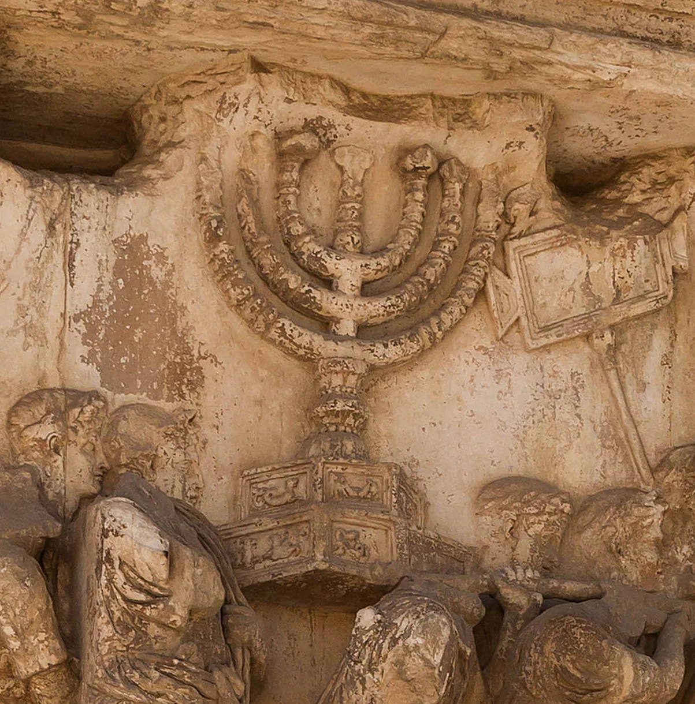

A virtual exhibition
Hidden and Displayed
The Menorah as Religious Symbol and National Symbol
What does a religious symbol gain, and what does it lose, when it becomes a national one?
Fifteen works, from a sketch on a wall in Jerusalem to an exhibition in Rome in 2017, and one test for each: who was allowed to see the menorah, and who was made to see it.
Curated by Jonathan Vidal. RELJ 3885, Introduction to Judaism Through the Arts, University of Virginia, Professor Asher D. Biemann, Fall 2026.

The menorah on the Arch of Titus, Rome, after 81 CE (detail). Photo: Jebulon, CC0, via Wikimedia Commons.
Introduction
A lamp kept out of public view
The menorah is the seven-branched lampstand of the Tabernacle and later of the Temple in Jerusalem. Its earliest surviving pictures date from the first century BCE, and since 1949 it has been on the emblem of the State of Israel. This exhibition asks what a religious symbol gains and what it loses when it becomes a national one. It answers by putting one test to fifteen works made over more than two thousand years: who was allowed to see the menorah, and who was made to see it.
The test matters because the menorah did not stand in public view. The Bible places it inside the sanctuary, “before the LORD,” and gives its care to Aaron and his sons. The Mishnah describes the Temple as a series of courts, each holier than the one before, and closes the court of the priests to Israelites except when an offering requires them to enter. The Talmud calls the menorah’s westernmost lamp “testimony to mankind,” but the lampstand itself stood where only priests were permitted to go. Two early public pictures of it were made by those who held power over it. Mattathias Antigonus, the last Hasmonean king, struck it on his coins between 40 and 37 BCE, before Herod defeated him and took Jerusalem. Rome paraded it in the triumph of Vespasian and Titus in 71 CE and carved it on the Arch of Titus after 81 CE.
After the Temple was destroyed in 70 CE, Jews pictured the menorah on tombs, glass, and synagogue floors, while a teaching preserved in the Talmud forbade making a seven-branched lampstand like the Temple’s. Christians did make such lampstands, full seven-branched candelabra for their churches. After the last known report of the Temple treasures, Procopius’s account of their display in Constantinople in 534 CE, they left the historical record. The menorah survived as a drawing in books and as a legend, while Jewish households lit a different lamp, the Hanukkah lamp, which could be shown in the window or kept inside. In 1949 the new State of Israel chose the menorah of the Arch of Titus for its emblem.
The fifteen works are arranged in six parts. The order is mostly by date. There are two main exceptions: in Part 2 the Arch of Titus (after 81 CE) comes before the Temple of Peace (dedicated 75 CE), and Part 5 begins in 534 CE, earlier than the church works of Part 4. Each work carries a short line naming who could see it and who was made to see it, and a label on what it shows and why it belongs here.
The argument of the exhibition is that the menorah’s meaning has often followed whoever controlled the sight of it, and that the national emblem is, in an important sense, the menorah as Rome displayed it. As a national symbol the menorah gained an audience it never had in the Temple, a whole people and the foreign governments that deal with them. It lost the restriction that once marked it as holy: a symbol that belongs to everyone cannot be kept from anyone.
Sources: Exodus 27:21 and Numbers 18:7 (JPS 1917); Mishnah Kelim 1:8–9, trans. Kulp; Bavli Shabbat 21b and 22b and Menachot 28b (William Davidson Talmud); Clermont-Ganneau 1871, 132; La Menorà exhibition panels (2017); Bibliothèque nationale de France, Vogüé 463; Bank of Israel, “Part 3: Currency Exhibition”; Parco archeologico del Colosseo, “Arco di Tito”; Procopius, Wars 4.9, trans. Dewing (1916); Lillington-Martin 2025, 196; Mishory, “Israel National Symbols: The State Emblem.”
Statement of rationale
Why the menorah, and why this question
I chose the menorah because, at different times, it has been kept by priests, displayed by Roman emperors, pictured by Jews on tombs, glass, and synagogue floors, copied and claimed by the Church, and adopted by a modern state. In class we met it on the Arch of Titus, in Stefan Zweig’s story of the buried candelabrum, and in the 1949 emblem of Israel. My first proposal stayed close to that material, and Professor Biemann’s reply pushed me in four directions: to set the question more sharply, to bring in a wider range of works, to say more about the hidden and the displayed, and to explore the idea of religious and national symbols. This exhibition is my answer to those four points.
The question I settled on is what a religious symbol gains and loses when it becomes a national one, and the way I test it is by asking of every work who was allowed to see the menorah and who was made to see it. I chose that test because it can be applied to very different things, a coin, a marble relief, a church candelabrum, a manuscript page, a family photograph, and a state emblem, and because it shows change over time more clearly than a list of meanings would.
Thirteen of the fifteen works did not appear on the class slides. Some of those thirteen still touch our readings. The Temple of Peace appears in the assigned passage of Josephus. The triumph of 534 CE is retold in Zweig’s story, and I take it here from Procopius’s own account. Fine’s essay mentions the belief that the Lateran held the spoils and the modern legend that the Vatican hides the menorah. The two works that were on the slides, the Arch of Titus and the 1949 emblem, appear because the argument cannot be made without them, and each is used for a point that the class slides and readings did not make: who was made to look at the arch, and how the committee that chose the emblem came to ask its designers for the arch’s menorah in place of a modern one. I relied on the records of the museums, libraries, and other institutions that hold the works, where such records exist, on the primary texts, in published translations where they exist (the English of the Essen and Lateran inscriptions is my own), and on the scholarship listed under consulted publications, beginning with Steven Fine, whose work Professor Biemann recommended as a good starting point, and Alec Mishory, an art historian who has written on the history of Israel’s state emblem. In his 2019 response to a review panel on his book The Menorah, Fine says that he never calls the menorah a “symbol” except when modern people choose that word for themselves. That modern choice is part of what this exhibition is about.
Jonathan Vidal, curator
Graffito with temple vessels, Jerusalem, 1st century BCE or first half of the 1st century CE. The Israel Museum, Jerusalem; Israel Antiquities Authority. Image via Google Arts & Culture.
Part 1 · The Lampstand in the Sanctuary · Work 1 of 15
Graffito with temple vessels
Jerusalem, Upper City, 1st century BCE or first half of the 1st century CE
Drawn near the Temple while the real lampstand still burned there, perhaps by a priest, one of those permitted to enter the room where it stood.
Someone scratched this drawing into the plaster wall of a wealthy house in Jerusalem’s Upper City while the Temple still stood nearby. It shows the seven-branched lampstand together with other furnishings of the sanctuary. Two fragments survive, and the museum’s mount, seen here, fills in the missing lines. The Israel Museum suggests that the artist was a priest who lived in the vicinity and knew the vessels, and it counts the sketch among the few images to survive “from the time the vessels still stood in the Temple.”
That suggestion matters, because the Temple’s rules, as the texts give them, left lay people outside the room where these vessels stood. The Bible places the lampstand “without the veil of the testimony, in the tent of meeting,” where Aaron tends it “before the LORD continually” (Leviticus 24:3). The Mishnah ranks the Temple’s courts by who may enter them: Israelites may enter the court of the priests only for certain rites of sacrifice, and the Sanctuary, where the lampstand stood, lies beyond that court (Kelim 1:8–9). Yet the Talmud calls the lampstand’s westernmost lamp “testimony to mankind that the Divine Presence rests among Israel” (Shabbat 22b). In these texts the lampstand is a sign for all people that stands where only priests may go. This sketch may be a view of it by someone who had been inside.
- Maker
- Unknown. The Israel Museum suggests a priest who lived in the vicinity; the Encyclopaedia Judaica calls it “an artisan’s sketch”
- Date
- Herodian period, 1st century BCE (Israel Museum); first half of the 1st century CE (Aviam 2013)
- Material
- Incised plaster, two fragments
- Size
- 32 by 32 cm (Israel Museum); the incised menorah is reported as 20 cm high and 12.5 cm wide
- Found
- 1969, in Nahman Avigad’s excavations in the Jewish Quarter
- Location
- The Israel Museum, Jerusalem (Israel Antiquities Authority)
Sources: The Israel Museum, “Graffito with temple vessels”; Aviam 2013, 212; Raviv 2018, 91; Haran, Gottlieb, and Strauss, “Menorah,” Encyclopaedia Judaica (2007); Israel Ministry of Foreign Affairs, “Jerusalem during the Second Temple Period” (via Jewish Virtual Library); Leviticus 24:2–4 (JPS 1917); Mishnah Kelim 1:8–9 (trans. Kulp); Bavli Shabbat 22b (William Davidson edition).
Prutah of Mattathias Antigonus, 40–37 BCE. Bibliothèque nationale de France, Vogüé 463. Source gallica.bnf.fr / BnF. 10 agorot, State of Israel, from 1985. Photo: Yonidebest, via Wikimedia Commons. Coin issued by the Bank of Israel.
Part 1 · The Lampstand in the Sanctuary · Work 2 of 15
Bronze coin of Mattathias Antigonus with the menorah, and the 10 agorot coin of the State of Israel
Jerusalem, 40–37 BCE; Israel, from 1985
A king who was also high priest put the Temple’s lampstand on a coin during his struggle with Herod. Since 1985 Israel’s 10 agorot coin has carried a replica of it.
Mattathias Antigonus, the last king of the Hasmonean family, ruled Jerusalem from 40 to 37 BCE, until Herod defeated him. This small bronze coin of Antigonus carries one of the earliest pictures of the Temple’s lampstand, and the Encyclopaedia Judaica calls it “the only ancient coin depicting a menorah.” One side shows the menorah with the title “King Antigonus” in Greek; the other shows the showbread table and the words “Mattathias the High Priest” in old Hebrew letters. The coin claims both offices at once.
The menorah stood inside the sanctuary. Yuval Baruch of the Israel Antiquities Authority assumes that no one but the priests could stand next to it to draw it, and that others “could only look at it from afar.” Antigonus put its image on small change, where anyone who handled the coin could see it. The picture went out in public while the object itself stayed in the sanctuary, and the one who sent it out was a ruler fighting for his throne. With his defeat in 37 BCE the Hasmonean dynasty ended. Since 1985 the State of Israel has struck the same image on its 10 agorot coin, with the state emblem above it. The Bank of Israel describes this side of the coin as a “Replica of a coin issued by Mattathias Antigonus.”
- Issued by
- Mattathias Antigonus (Antigonus II), last king of the Hasmonean dynasty, Jerusalem mint
- Inscriptions
- Greek, around the menorah: “King Antigonus”; Paleo-Hebrew, around the table: “Mattathias the High Priest”
- Material
- Bronze (a prutah, the small change of Judaea); 1.49 g
- Location
- Bibliothèque nationale de France, Paris, Monnaies, médailles et antiques, Vogüé 463
- Modern coin
- 10 agorot, Bank of Israel, issued September 4, 1985; obverse designed by Nathan Karp
Sources: Bibliothèque nationale de France, Vogüé 463; British Museum 1888,0512.29; Bank of Israel, “Part 3: Currency Exhibition” and coin series pages; Haran, Gottlieb, and Strauss, “Menorah,” Encyclopaedia Judaica (2007); Raviv 2018, 92; Tercatin 2026.
Arch of Titus, Rome, after 81 CE. Photo: Jebulon, CC0, via Wikimedia Commons.
Part 2 · Rome Displays the Spoils · Work 3 of 15
The spoils of Jerusalem, relief inside the Arch of Titus
Rome, after 81 CE
In Jerusalem the lampstand stood inside the sanctuary, where Josephus places only the priests. In Rome it was carved on the road to the emperors’ palaces and painted yellow, the color of gold, for passers-by to see.
After Titus died in 81 CE, the Senate and People of Rome dedicated this arch to him as a god. Inside its single passage, on the inner face of the south pier, a marble panel shows the triumph of 71 CE: Roman bearers crowned with laurel carry the lampstand, the table, and the silver trumpets of the Jerusalem Temple. In 2012 a team led by Steven Fine of Yeshiva University, with Bernard Frischer, then of the University of Virginia, found traces of yellow ochre on the menorah’s arms and base. The lampstand was painted yellow, the color of gold.
The arch stands where the road climbs from the Forum to the emperors’ palaces, so officials and people with business before the emperor would have passed this panel. In Jerusalem the lampstand stood inside the sanctuary, where Josephus places only the priests; in Rome it was carved where anyone using the road would see it, as a display of Rome’s victory. The relief also leaves something out. Josephus says that “last of all the spoils” in the procession came “a copy of the Jewish Law,” but the panel does not show it. The next work shows where Josephus says the gold vessels and the Law went.
- Commissioned by
- The Senate and People of Rome, probably under Domitian, for the deified Titus
- Date
- After 81 CE; the scene is the triumph of 71 CE
- Material
- Pentelic marble, relief; originally painted (yellow ochre found on the menorah in 2012)
- Location
- In place, inner face of the south pier, Arch of Titus, Roman Forum (Parco archeologico del Colosseo)
Sources: Parco archeologico del Colosseo, “Arco di Tito” (Mirabilia and Restauri pages); Yeshiva University press release, 2012; Fine, “Menorahs in Color” (2012) and “The Arch of Titus in Color” (2017); Josephus, Jewish War 7.148–150, trans. Thackeray (Loeb, 1928), 549, and 5.216, 5.226–229 (same translation).
Temple of Peace, Rome, dedicated 75 CE. Photo: Deb Nystrom, CC BY 2.0, via Wikimedia Commons.
Part 2 · Rome Displays the Spoils · Work 4 of 15
The Temple of Peace, where Rome displayed the vessels
Rome, dedicated 75 CE; burned under Commodus, 192 CE
Josephus reports a division of the spoils: the gold vessels on public display, the Law and the sanctuary’s curtains kept in the palace.
Four years after the triumph, Vespasian dedicated a precinct to Peace beside the Roman Forum, a nearly square garden with fountains and colonnades that Rome’s heritage office today calls a public museum. Josephus says that “into that shrine were accumulated and stored all objects for the sight of which men had once wandered over the whole world,” and that Vespasian also “laid up the vessels of gold from the temple of the Jews” there.
Not everything went there. Vespasian ordered “their Law and the purple hangings of the sanctuary” to be “deposited and kept in the palace.” Josephus gives no reason. This exhibit reads the division as one of sight: the gold vessels where the public could see them, the Law and the curtains kept in the palace. Rabbinic tradition later remembered a sage, Rabbi Elazar son of Rabbi Yose, who said of the Temple curtain, “I saw [it] in Rome,” with drops of blood from the Temple offerings on it (Yoma 57a).
Josephus speaks here of the gold vessels as a group and does not name the menorah. Fire swept the Temple of Peace under Commodus, in 192 CE. No ancient source read for this exhibit says what happened to the vessels in the fire. Steven Fine, who dates the fire to 191, thinks the menorah was likely destroyed in it.
- Built by
- The emperor Vespasian
- Dedicated
- 75 CE (Cassius Dio)
- Size
- Piazza 110 by 105 m, with colonnades on three sides
- Later history
- Burned under Commodus (192 CE); restored under Septimius Severus
- Location
- Ruins along Via dei Fori Imperiali, Rome (Sovrintendenza Capitolina ai Beni Culturali)
Sources: Josephus, Jewish War 7.158–162, trans. Thackeray (Loeb, 1928), 551–553; Pliny, Natural History 34.84, trans. Bostock and Riley; Cassius Dio 65.15.1 and 73.24.1, trans. Cary (Loeb, 1925 and 1927), 8:289 and 9:121; Sovrintendenza Capitolina, “Il Templum Pacis”; Bavli Yoma 57a (William Davidson edition); Bohen 2022 (interview with Steven Fine).
Bowl Fragments with Menorah, Shofar, and Torah Ark, 300–350 CE. The Metropolitan Museum of Art, New York, Rogers Fund, 1918 (18.145.1a, b). Public domain.
Part 3 · Jews Display the Memory · Work 5 of 15
Bowl fragments with menorah, shofar, and Torah ark
Probably Rome, 300–350 CE
Pictured in gold for Jewish owners, probably in Rome, more than two centuries after the arch: the menorah upright beside an open Torah ark, for their own table and perhaps, later, a grave.
These two fragments come from the base of a glass drinking bowl made in the first half of the fourth century, probably in Rome. A picture in gold leaf is sealed between two layers of glass: a Torah ark with its doors open and the scrolls inside, a seven-branched menorah on each side of it (only part of the left one survives), and a ram’s horn. The museum also identifies an etrog (citron) and, below, the remains of a banqueting scene. Around the edge runs an inscription in Latin letters, now incomplete. The museum translates the words it can interpret as “May you drink with praise.”
The bowl was made more than two centuries after the Arch of Titus, probably in the same city. On the arch Roman bearers carry the lampstand as spoil. Here it stands upright beside an open ark, pictured for Jewish owners and their own table. Many such bowls were later broken and pressed into the plaster beside graves in Rome’s catacombs. The museum’s record does not say whether this one was. Two Metropolitan Museum curators write that the menorah “frequently served merely to distinguish a Jewish monument or a Jewish patron,” so the picture may be a sign of identity more than a statement of hope. Either way, the bowl’s Jewish owners decided when the menorah was shown, and to whom.
- Maker
- Unknown Roman workshop
- Date
- 300–350 CE (museum’s date)
- Material
- Glass with gold leaf, two fragments
- Inscription
- In Latin letters, incomplete; the museum translates the words it can interpret as “May you drink with praise”
- Location
- The Metropolitan Museum of Art, New York, 18.145.1a, b. Rogers Fund, 1918
Sources: The Metropolitan Museum of Art, object record 18.145.1a, b; Boehm and Holcomb, “Jewish Art in Late Antiquity and Early Byzantium” (The Metropolitan Museum of Art, 2008); Barag, “Glass,” Encyclopaedia Judaica (2007).
Sepphoris synagogue mosaic, early 5th century CE. Photo: Yair Haklai, CC BY-SA 4.0, via Wikimedia Commons.
Part 3 · Jews Display the Memory · Work 6 of 15
Synagogue floor with an architectural façade, two menorahs, and Temple offerings
Sepphoris (Zippori), Galilee, early 5th century CE
In the Temple the showbread table stood where only priests were permitted to go. Here it is pictured on a synagogue floor, in view of everyone who entered the hall.
The excavator, Zeev Weiss, recounts that in 1993, while Sepphoris was being prepared to open as a national park, a bulldozer uncovered part of the mosaic floor of a fifth-century synagogue. Its long carpet of panels includes a building façade flanked by two seven-branched menorahs, and objects and scenes from the Tabernacle and Temple service, among them the showbread table, the daily offering, and a basket of first fruits.
In the Temple the showbread table and the lampstand stood in the sanctuary, where only priests were permitted to go. The Talmud says that at the festivals the table was lifted so that the showbread on it could be shown to pilgrims (Hagigah 26b). Here the table is pictured on the floor of a city synagogue, in view of everyone who entered the hall, and the menorahs lie near the far end, close to the platform. Weiss reads the floor as a Jewish answer to Christian claims, in a city that also had Christians: it asserts that the Jews are the chosen people. He reports that Steven Fine, Rachel Hachlili, and others read such façades as the synagogue’s own Torah ark; he sees both the ark and the Temple, and stresses the Temple. Either way, after the Temple was gone, a Jewish congregation decided what would be shown, and it chose the menorah with the table and offerings of the Temple.
- Date
- Early 5th century CE (excavators’ date)
- Material
- Floor mosaic
- Size
- Synagogue building about 7.7 by 20.8 m; the mosaic carpet covers the floor of its main hall
- Discovered
- 1993; excavated by the Hebrew University of Jerusalem (Zeev Weiss and Ehud Netzer, 1993–1994; Zeev Weiss, 1996–1998)
- Location
- In place, Zippori National Park, Israel
Sources: Weiss 2000, as excerpted by the Center for Online Judaic Studies; Weiss 2010, 167–168, 176, 178; Weiss 2016, 122, 124; Magness 2024, 22–24; Britt and Boustan 2021; Ben David, Osband, and Aviam, “Sepphoris” (Bornblum Eretz Israel Synagogues Website); Bavli Hagigah 26b (William Davidson Talmud); Exodus 26:35 and Numbers 18:7 (JPS 1917); Mishnah Kelim 1:8–9 (trans. Kulp).
Lead pendant with menorah, Jerusalem, 6th to early 7th century CE. Israel Antiquities Authority. Photo: Eliyahu Yanai, City of David.
Part 3 · Jews Display the Memory · Work 7 of 15
Lead pendant with a menorah on both sides
Found in Jerusalem; 6th to early 7th century CE; announced December 2025
By its excavators’ account, worn by a Jew in a city that barred Jews, and found near the Temple Mount: in this exhibit, the menorah at its most private.
This disk of cast lead has a loop at the top, most likely for a necklace, and carries a seven-branched menorah in a circle on each face. It was found near the southwestern corner of the Temple Mount, in the rubble of a building of the late Byzantine period, and the Israel Antiquities Authority announced the find on December 15, 2025. Because lead was a common material for amulets at that time, Yuval Baruch of the Authority suggests that its owner wore it as an amulet, not as jewelry.
The Authority says the pendant “was apparently worn by a Jew who arrived in Jerusalem during the Byzantine period, when Jews were prohibited from entering the city.” If that is right, its wearer brought the image of the Temple’s lampstand into a city that excluded Jews. In this exhibit it is the menorah at its most private: a pendant that could be worn under a garment. With a menorah on each face, it showed the menorah whichever way the disk turned. About fourteen centuries later, a state agency announced that it would go on public view at Hanukkah, and a sign that may have been private became a public one.
- Material
- Cast lead (about 99 percent lead, by X-ray fluorescence)
- Date
- 6th to early 7th century CE, from the building in which it was found
- Found
- Davidson Archaeological Park, near the southwestern corner of the Temple Mount, by the excavation worker Ayayu Belete
- Location
- Israel Antiquities Authority; where it is now kept is not stated in the announcement
- Size
- Not given in the announcement
Sources: Israel Antiquities Authority, press release, December 15, 2025.
Seven-branched candelabrum, Essen Cathedral, about 1000 CE. Photo: Abbatissa, CC BY-SA 3.0, via Wikimedia Commons.
Part 4 · Churches Make and Claim the Lampstand · Work 8 of 15
Seven-branched candelabrum, Essen
Essen, Germany, about 1000 CE
The oldest surviving Christian seven-branched candelabrum: the lampstand the rabbis told Jews not to copy, cast in bronze and dedicated to Christ.
Mathilde, abbess of the women’s community at Essen, had this candelabrum cast in bronze for her church around the year 1000. A short Latin inscription on the lower shaft speaks in the object’s own voice. In translation it reads: “Abbess Mathilde ordered me to be made and consecrated me to Christ.” It is the oldest seven-branched candelabrum to survive from a Christian church, and its form largely follows the lampstand described in Exodus.
The candelabrum is the kind of object that a rabbinic teaching told Jews not to make. The Talmud teaches that no one may make “a candelabrum corresponding to [the] Candelabrum” of the Temple, and that a lamp of five, six, or eight branches is allowed but one of seven is not (Menachot 28b). Jews pictured the menorah on floors and tombs, but few stone menorahs made in the round have been found. Churches did make it in the round, as a working lamp. A service book of the late fourteenth century places this one in the nave, where at Pentecost the foundation’s scholars knelt before it and sang Veni sancte spiritus. The treasury suggests that Mathilde meant it as a memorial light. This exhibit also reads it as a claim on the lampstand: the church at Essen did not hide its copy of the Temple’s lamp but displayed it and dedicated it to Christ.
- Commissioned by
- Mathilde, abbess of Essen
- Date
- About 1000 CE (during Mathilde’s rule, c. 973–1011)
- Material
- Bronze, cast in separate parts; traces of gilding
- Size
- Height 226 cm, width 188 cm (treasury’s figures)
- Location
- Essen Cathedral, west building; Essen Cathedral Treasury, inv. 1
Sources: Domschatz Essen, “Siebenarmiger Leuchter”; Hermann, Die Inschriften der Stadt Essen (DI 81), no. 10; Streicher 2023, 187; Bavli Menachot 28b; Israel Museum, “Three-Dimensional Synagogue Menorah” (Ma’on).
Tabula Magna Lateranensis, Rome, 1288–1292. Photo: ElfQrin, CC BY 4.0, via Wikimedia Commons.
Part 4 · Churches Make and Claim the Lampstand · Work 9 of 15
The relic list of St. John Lateran (Tabula Magna Lateranensis)
Rome, 1288–1292
Rome’s cathedral listed the Temple’s golden candelabrum among its relics in gold mosaic letters. Visitors could read the claim; they could not see the object.
In St. John Lateran, the papal church and cathedral of Rome, a mosaic inscription in gold letters lists the relics the Lateran claimed. Beneath the altar it places the Ark of the Covenant, the rods of Moses and Aaron, and the candelabrum aureum, the golden candelabrum. About a century earlier the Jewish traveler Benjamin of Tudela wrote of a cave in the same church where Titus had hidden the Temple vessels.
Titus and Vespasian, the inscription says, had the Ark and the candelabrum carried from Jerusalem to Rome, “as is seen to this day on the triumphal arch beside the church of Santa Maria Nova.” That arch is the Arch of Titus. At Essen a church made a seven-branched lampstand of its own; at the Lateran the papal church claimed to hold the Temple’s. The claim was on display while the object was said to lie beneath the altar, so visitors were asked to believe in a menorah they could not see. The curators of the 2017 Vatican and Jewish Museum exhibition call such claims “fanciful tales, completely unfounded,” and note that the tales kept alive, until the end of the twentieth century, the belief that the menorah was hidden in the Vatican. Steven Fine writes of the Lateran’s claim: “Though neither Christians nor Jews could actually see the Menorah, its presence was intense.”
- Made for
- The Basilica of St. John Lateran, during the papacy of Nicholas IV (1288–1292)
- Material
- Mosaic inscription, gilded letters on a dark ground
- Location
- Basilica of St. John Lateran, Rome, beside the sacristy door
- Shown in 2017
- As a reproduction at the Jewish Museum of Rome, in La Menorà: culto, storia e mito, checklist no. III.27
Sources: Inscription transcribed and translated from the photograph by the curator of this exhibit; Di Castro, Leone, and Nesselrath, “The Reason for the Exhibition,” in Leone, ed., La Menorà (2017), 26–29; La Menorà exhibition panels (2017), PDF p. 15, and checklist, no. III.27; Brandfon 2017; Fine 2005; Fine 2016, 21.
Justinian and his court, mosaic, San Vitale, Ravenna. Photo: Roger Culos, CC BY-SA 3.0, via Wikimedia Commons.
Part 5 · Hidden Again · Work 10 of 15
Justinian sends the treasures away: Procopius, History of the Wars 4.9
Constantinople, 534 CE; written in the 540s–550s
The last known report of the Temple treasures: Procopius says they were shown in a triumph in 534, then sent away by an emperor who had become afraid.
In 455 CE the Vandals sacked Rome and carried the imperial treasure to Carthage. In 534 CE the general Belisarius brought it to Constantinople and displayed it in a triumph, and his adviser Procopius wrote that “among these were the treasures of the Jews, which Titus, the son of Vespasian, together with certain others, had brought to Rome after the capture of Jerusalem.”
Procopius adds a story. A Jew who saw the treasures warned one of the emperor’s circle that “it is not possible for them to be elsewhere than in the place where Solomon, the king of the Jews, formerly placed them,” because, he said, they had cost first the Romans and then the Vandals their palace. The emperor Justinian, shown here in a mosaic in Ravenna, “became afraid and quickly sent everything to the sanctuaries of the Christians in Jerusalem.”
This is the last known historical report of the Temple treasures, and it does not name the menorah. Elsewhere Procopius himself puts “the treasures of Solomon, the king of the Hebrews” in the treasure the Visigoth Alaric took from Rome. Steven Fine thinks the menorah was likely destroyed long before 534, in the fire at the Temple of Peace. From here on, the exhibit follows the menorah as image, text, and legend. Stefan Zweig’s story The Buried Candelabrum (1937) retells the episode and invents a secret burial for the lampstand.
- Author
- Procopius of Caesarea, adviser to the general Belisarius
- Text
- History of the Wars 4.9.1–11 (the Vandalic War)
- Translation
- H. B. Dewing, Loeb Classical Library, 1916, pp. 279–281
- Image
- Emperor Justinian and his court, mosaic, San Vitale, Ravenna
Sources: Procopius, Wars 3.5.3 and 4.9.1–11, trans. Dewing (1916), 47, 279–281, and 5.12.41–42, trans. Dewing (1919), 129; Lillington-Martin 2025, 193 n. 1, 196; La Menorà exhibition panels (2017), PDF p. 14; Bohen 2022 (interview with Steven Fine); Zweig, “The Buried Candelabrum,” trans. Eden and Cedar Paul (1987).
Maimonides, Commentary on the Mishnah, 1167–1168. Bodleian Library, MS. Pococke 295, fol. 184v. Photo: © Bodleian Libraries, University of Oxford. Terms of use: CC BY-NC 4.0.
Part 5 · Hidden Again · Work 11 of 15
Maimonides’ drawing of the menorah, in his own Commentary on the Mishnah
Fustat (Old Cairo), 1167–1168
Drawn from words by a scholar who never saw the lampstand, hidden in manuscripts for almost eight centuries, its form then displayed in public as an answer to the menorah of the Arch of Titus.
In 1168 Moses Maimonides finished his commentary on the Mishnah, and in a volume of his own copy, now in Oxford, he wrote: “I saw fit to draw here the complete form of the menorah.” He had never seen it. The Temple had been destroyed more than a thousand years earlier, so he built his picture from words, marking the cups, knobs, and flowers that the Torah describes. In the drawing the branches rise as straight diagonal lines. His son Abraham wrote that the branches were straight “as drawn by my father,” though scholars still debate whether Maimonides intended that shape.
For almost eight centuries the drawing stayed inside manuscripts. After a facsimile appeared in 1956, Rabbi Menachem Mendel Schneerson, leader of the Chabad movement, began in 1982 a campaign to replace the round-branched menorah with this straight-branched one. In a talk that year, as translated in a Chabad magazine, he said that the round-branched image “appears on the coins of Eretz Yisroel” (the Land of Israel), and an adaptation of his talks objects that “the conception from the arch which proudly states ‘Judea is vanquished’” is used instead of the sages’ conception. A form hidden in a book became a counter-symbol, displayed at public menorah lightings around the world as an alternative to the menorah of the Arch of Titus, the form that the State of Israel put on its emblem in 1949.
- Author and artist
- Moses Maimonides (died 1204)
- Date
- 1167–1168
- Material
- Drawing within the Judeo-Arabic text, on paper
- Location
- Bodleian Library, Oxford, MS. Pococke 295, fol. 184v
Sources: Bodleian Library, MS. Pococke 295; Fine, “Maimonides’ Straight-Branched Menorah” (2023); Exodus 25:31 (JPS 1917); Netz 2024; Schneerson, “The Design of the Menorah” (Chabad.org); Greenberg 2025, 28.
Perpignan Bible, 1299. Bibliothèque nationale de France, hébreu 7, fol. 12v. Source gallica.bnf.fr / BnF.
Part 5 · Hidden Again · Work 12 of 15
The Temple vessels at the front of the Perpignan Bible
Perpignan, 1299
Vessels that once stood where only priests served, painted in gold at the front of a Bible that its scribe copied for himself.
Solomon son of Raphael finished copying this Bible in Perpignan in 1299. His colophon says, in Eva Frojmovic’s translation: “I, Solomon son of Rabbi Raphael, have written this book for myself.” The book opens with eighteen pages of Masoretic lists framed by arches, then a pair of carpet pages. After them, before Genesis, come two facing pages of the Temple’s furnishings, painted in matte gold on bare parchment and labeled in red. The first of them, shown here, holds the menorah. Katrin Kogman-Appel, with many earlier scholars, reads such pages as images of the future messianic Temple. She calls the vessels here an allusion to the idea of the Bible as a “minor Temple.” She suggests that the arched pages were meant to make readers feel they were walking through a courtyard, and that the carpet pages could have served as the passage into that Temple.
Read this way, the page changes the rules of the sanctuary. In Jerusalem the vessels stood behind courts and curtains that kept lay Israelites away. Here they lie open to the man who copied the book for himself, and to whoever he allowed to open it. Long after the Temple was destroyed, Jews in Catalonia and elsewhere kept images of its vessels in the pages of Bibles, where the menorah was shown to those who opened the book.
- Scribe and first owner
- Solomon son of Raphael
- Date
- Finished in the month of Sivan 5059 (1299)
- Material
- Parchment; the vessels painted in matte gold, labeled in red ink
- Size
- 321 by 237 mm
- Page shown
- Fol. 12v, the first of two facing pages of vessels (fols. 12v–13r)
- Location
- Bibliothèque nationale de France, Paris, hébreu 7
Sources: Bibliothèque nationale de France, hébreu 7 (Gallica record); Frojmovic 2015, accepted manuscript p. 1 (translation of the colophon); Kogman-Appel 2002, 248–249, and 2025, 285, 288–289; Exodus 27:21 (JPS 1917); Mishnah Kelim 1:8–9 (trans. Kulp); Josephus, Jewish War 5.219 and 5.226 (trans. Whiston).
Rachel Posner, Hanukkah lamp in the window of the Posner apartment, Kiel, Hanukkah 5692 (December 1931). Yad Vashem Artifacts Collection; Posner Family Estate, courtesy of Shulamit Mansbach, Haifa. yadvashem.org.
Part 5 · Hidden Again · Work 13 of 15
Hanukkah lamp in the window of the Posner family, Kiel
Kiel, Germany, Hanukkah 1931
The Talmud puts the Hanukkah lamp at the outside door, or at a window on the street for those who live upstairs, and allows it on the table in a time of danger. In December 1931 the Posners’ lamp stood in the window, across the road from the Nazi party office.
This is a Hanukkah lamp, not the seven-branched lampstand of the Temple. It belongs here because the Talmud’s rule for it is about where it can be seen: it is “a mitzva to place the Hanukkah lamp at the entrance to one’s house on the outside,” or, for someone who “lived upstairs,” at the window “adjacent to the public domain,” and “in a time of danger” it may be placed “on the table” (Shabbat 21b). The Talmud ranks the lamp above the Sabbath kiddush wine “due to publicity of the miracle” (Shabbat 23b). The miracle, as Shabbat 21b tells it, is that one day’s Temple oil was lit for eight days.
In December 1931 Rachel Posner, wife of Kiel’s rabbi, photographed the family’s lamp on the windowsill, with the swastika flag of the Nazi party office across the street behind it. Her granddaughter said in 2022 that most Jews, “after the rise of the Nazis,” drew their curtains to hide the lamp, and that Rachel wanted to show she and her husband were not afraid. On the back Rachel wrote lines in German, which Yad Vashem translates: “‘Death to Judah’ / So the flag says / ‘Judah will live forever’ / So the light answers.” At Hanukkah 2009 a great-grandson in Israeli army uniform read a poem. In Yad Vashem’s translation, “the menorah stands in the window once again / Facing the flag of the ruling State.”
- Photographer
- Rachel (Rosi) Posner (died 1982)
- Date
- Hanukkah 5692, December 1931 (the back is dated 1932, most likely the year the picture was developed, according to Yad Vashem)
- Object
- The Posner family’s Hanukkah lamp, nine branches
- Location
- Yad Vashem, Jerusalem, Holocaust History Museum; on loan from the Posner family, who light the lamp at home each Hanukkah
Sources: Yad Vashem, “Prewar Hanukkah Menorah Owned by the Posner Family in Kiel, Germany”; Paul 2016, 60–61; Connolly 2022; Bavli Shabbat 21b and 23b.
Gabriel and Maxim Shamir, early sketch for the state emblem, with a modern menorah. As published by the National Library of Israel. Gabriel and Maxim Shamir, final proposal for the emblem of the State of Israel, 1949, signed by David Ben-Gurion. Ruby and Yoram E. Shamir collection. As published by the National Library of Israel.
Part 6 · Displayed Again · Work 14 of 15
The emblem of the State of Israel, and the menorah the committee chose
Israel, 1948–1949; proclaimed February 10, 1949
The designers drew a modern menorah. The state’s committee asked for the menorah of the Arch of Titus instead, and the national symbol became Rome’s picture of the Temple lamp.
Three weeks after independence in 1948, the provisional government invited designs for a state emblem that would include a seven-branched candelabrum and seven stars. The leading design, by Oteh Walisch and W. Struski, modeled its menorah on the Arch of Titus, but it was not accepted. A new committee then considered a proposal by Itamar David and Yerachmiel Schechter that took its menorah from the mosaic floors of ancient synagogues, and did not accept that either. A second public call produced the design that won, by the brothers Gabriel and Maxim Shamir, with a deliberately modern menorah. “Our intention was to create a modern emblem, without Jewish traditional symbols,” Gabriel Shamir later told the newspaper Ma’ariv.
On January 10, 1949, the committee changed course. At the suggestion of Transport Minister David Remez, it asked the Shamirs to replace their menorah with “Titus’s menorah.” Alec Mishory reads the choice as a metaphor of return: the lampstand that symbolized “defeat, humiliation and disgrace” on the arch would be “installed in a place of honor” on the emblem of the reborn state. Critics said the arch’s menorah did not match the Bible’s description, and the Chief Rabbi, Isaac Herzog, ruled that “it is not all in accordance with the sacred text.” In Mishory’s reading the emblem announces a homecoming. It does so with the image that Rome made to display its victory.
- Designers
- Gabriel Shamir (1909–1992) and Maxim Shamir (1910–1990)
- Chosen by
- The Emblem and Flag Committee, headed by Beba Idelson; ratified by the Provisional Council of State
- Proclaimed
- 11 Shevat 5709 (February 10, 1949), signed by Joseph Sprinzak, Speaker
- Shown here
- An early sketch by the Shamirs, and a sketch of the final version of the emblem, 1949, signed by David Ben-Gurion; both as published by the National Library of Israel, which names no holder
Sources: Mishory, “Israel National Symbols: The State Emblem”; Gardosh-Santo and Shamir 2017 (National Library of Israel); La Menorà checklist (2017), VIII.10; Fine 2016, 32.
Poster for La Menorà: culto, storia e mito, 2017. Musei Vaticani and Museo Ebraico di Roma.
Part 6 · Displayed Again · Work 15 of 15
La Menorà: culto, storia e mito, an exhibition about an absent object
Vatican City and Rome, May 16 – July 23, 2017
In 2017 the Vatican Museums and the Jewish Museum of Rome told the story of the menorah together, in the city of the Arch of Titus, without the menorah.
A modern legend says that the Vatican hides the menorah. In 2017 the Vatican Museums and the Jewish Museum of Rome mounted a joint exhibition of the menorah’s history, with about 130 works, in the Charlemagne Wing on St. Peter’s Square and in the Jewish Museum in Rome’s Great Synagogue. A news report before the opening noted that the star of the show would not be there. The poster prints the Arch of Titus relief in gray and picks out the menorah alone in gold.
The exhibition gathered nearly every kind of claim this exhibit has followed. In the Vatican wing, the Magdala Stone, carved while the Temple still stood, was exhibited for the first time anywhere, and the next section showed a cast of the Arch of Titus relief. In the Jewish Museum, a reproduction of the Lateran inscription named the candelabrum that the Church once claimed to own. The Vatican wing also showed the Shamir brothers’ final watercolor for Israel’s state emblem, with the menorah of the Arch of Titus, signed by David Ben-Gurion. Rome’s chief rabbi, Riccardo Di Segni, said: “A lot of people will be disappointed to discover that these urban legends are not true.” The object at the center of the exhibition was absent, and the Church, the synagogue, and the state each appeared in it with a menorah of its own.
- Organizers
- Vatican Museums and Jewish Museum of Rome, the first joint project of the Vatican City State and Rome’s Jewish community
- Curators
- Alessandra Di Castro, Francesco Leone, Arnold Nesselrath
- Works
- About 130
- Catalogue
- Francesco Leone, ed., La Menorà: culto, storia e mito (Milan: Skira, 2017)
Sources: Musei Vaticani and Museo Ebraico di Roma, press release (2017); Musei Vaticani, exhibition web page (2017); La Menorà exhibition panels (2017), PDF pp. 4 and 25, and checklist, nos. I.4, II.7, III.27, VIII.10; Di Castro, Leone, and Nesselrath 2017; Pullella 2017; Fine 2016, 47. Poster as published by the Museo Ebraico di Roma.
Conclusion
What the menorah gained, and what it lost
The fifteen works in this exhibition follow an object that few were permitted to approach and that many pictured. In the sanctuary the lampstand stood “before the LORD” (Leviticus 24:4), tended by priests. The Talmud calls its westernmost lamp “testimony to mankind” (Shabbat 22b), though it burned in the sanctuary, the place of priestly service. Two early public images came from those who held power over it. Mattathias Antigonus struck it on his coins as king and high priest. Rome carried it through the city in triumph and carved it on an arch, and Josephus says that Vespasian placed the Temple’s gold vessels in the Temple of Peace and kept the Law and the sanctuary’s curtains in the palace.
After the Temple was destroyed in 70 CE, Jews displayed the menorah themselves, as memory and as a sign of identity, on a gold-glass bowl, a synagogue floor, and a pendant, to viewers they chose. A teaching preserved in the Talmud forbade making a seven-branched lampstand like the Temple’s (Menachot 28b). Churches made such lampstands, and the Lateran claimed to hold the original. After the last known historical report of the Temple treasures, Procopius’s account of their display in Constantinople in 534 CE, the menorah appears in this exhibition as a drawing in books that only their readers opened. Jewish households lit a different lamp, the Hanukkah lamp, which the Talmud places at the outside door or a street window and, in a time of danger, on the table inside (Shabbat 21b).
In 1949 the State of Israel chose the menorah that Rome had carved. The designers had drawn a modern lampstand, and the committee asked for the menorah of the Arch of Titus instead. Alec Mishory reads the choice as the menorah’s return from the arch, where it stood for defeat, to “a place of honor” on the state’s emblem. The reading is persuasive, but the choice also means that the national symbol takes its form from the conqueror’s display.
The answer to this exhibition’s question follows from that history. As a national symbol the menorah gained an audience it never had in the Temple: on the state emblem it appears on official documents, on coins, and on public buildings in Israel and abroad. It lost what the sanctuary had protected, the distance between a holy object and the people who were not permitted to approach it. The 2017 exhibition at the Vatican and the Jewish Museum of Rome showed the result: a cast of Rome’s relief, a reproduction of the Lateran’s relic list, and the final proposal for Israel’s emblem, and no menorah. Rome, the Church, and the State of Israel have each pictured or claimed the lampstand, and none of them is known to have it.
Sources: Leviticus 24:4, Exodus 27:21, and Numbers 18:7 (JPS 1917); Bavli Shabbat 21b and 22b and Menachot 28b (William Davidson Talmud); Bibliothèque nationale de France, Vogüé 463; Bank of Israel, “Part 3: Currency Exhibition” and coin series pages; Josephus, Jewish War 7.148–150 and 7.158–162, trans. Thackeray (Loeb, 1928), 549, 551–553; Parco archeologico del Colosseo, “Arco di Tito”; The Metropolitan Museum of Art, object record 18.145.1a, b; Boehm and Holcomb, “Jewish Art in Late Antiquity and Early Byzantium” (2008); Weiss 2010, 176; Israel Antiquities Authority, press release, December 15, 2025; Domschatz Essen, “Siebenarmiger Leuchter”; Streicher 2023, 187; Procopius, Wars 4.9, trans. Dewing (1916); Lillington-Martin 2025, 196; Bodleian Library, MS. Pococke 295; Bibliothèque nationale de France, hébreu 7; Mishory, “Israel National Symbols: The State Emblem”; La Menorà exhibition panels and checklist (2017), II.7, III.27, VIII.10; Di Castro, Leone, and Nesselrath 2017; Pullella 2017.
Sources
Consulted publications
The statements in this exhibit rest on the sources listed here and on the curator’s own reading of the images and inscriptions. Short references under each work point to this list.
Primary sources
- Cassius Dio. Dio’s Roman History. Translated by Earnest Cary, on the basis of the version of Herbert Baldwin Foster. Vol. 8. Loeb Classical Library 176. London: William Heinemann; New York: G. P. Putnam’s Sons, 1925.
- Cassius Dio. Dio’s Roman History. Translated by Earnest Cary, on the basis of the version of Herbert Baldwin Foster. Vol. 9. Loeb Classical Library 177. London: William Heinemann; New York: G. P. Putnam’s Sons, 1927.
- The Holy Scriptures According to the Masoretic Text: A New Translation. Philadelphia: Jewish Publication Society of America, 1917. Sefaria. Accessed November 22, 2026. https://www.sefaria.org/Exodus.25.31.
- Josephus. The Works of Flavius Josephus. Translated by William Whiston. Auburn and Buffalo, NY: John E. Beardsley, 1895. Perseus Digital Library, Tufts University. Accessed November 22, 2026. http://www.perseus.tufts.edu/hopper/text?doc=Perseus:text:1999.01.0148.
- Josephus. The Jewish War, Books IV–VII. Translated by H. St. J. Thackeray. Vol. 3 of Josephus. Loeb Classical Library 210. London: William Heinemann; New York: G. P. Putnam’s Sons, 1928.
- Kulp, Joshua, trans. Mishnah Yomit. Sefaria. Accessed November 22, 2026. https://www.sefaria.org/Mishnah_Kelim.1.8.
- Pliny the Elder. The Natural History of Pliny. Translated by John Bostock and H. T. Riley. 6 vols. London: Henry G. Bohn, 1855–57. Vol. 6 (1857).
- Procopius. History of the Wars, Books III and IV. Translated by H. B. Dewing. Vol. 2 of Procopius. Loeb Classical Library 81. London: William Heinemann; New York: G. P. Putnam’s Sons, 1916.
- Procopius. History of the Wars, Books V and VI. Translated by H. B. Dewing. Vol. 3 of Procopius. Loeb Classical Library 107. London: William Heinemann; New York: G. P. Putnam’s Sons, 1919.
- Schneerson, Menachem M. “The Design of the Menorah.” Translated by Eli Touger. Adapted from Likkutei Sichos, vol. 21, Parshas Terumah, and vol. 26, Parshas Tetzaveh. Chabad.org. Accessed November 22, 2026. https://www.chabad.org/therebbe/article_cdo/aid/148170/jewish/The-Design-of-the-Menorah.htm.
- The William Davidson Talmud. Translated and annotated by Adin Even-Israel Steinsaltz. Jerusalem: Koren Publishers. Sefaria. Accessed November 22, 2026. https://www.sefaria.org.
- Zweig, Stefan. “The Buried Candelabrum.” In Jewish Legends, translated by Eden and Cedar Paul, 1–143. New York: Markus Wiener, 1987. First published 1937 as Der begrabene Leuchter.
Scholarship
- Aviam, Mordechai. “The Decorated Stone from the Synagogue at Migdal: A Holistic Interpretation and a Glimpse into the Life of Galilean Jews at the Time of Jesus.” Novum Testamentum 55, no. 3 (2013): 205–20. https://doi.org/10.1163/15685365-12341433.
- Barag, Dan P. “Glass.” In Encyclopaedia Judaica, 2nd ed., edited by Michael Berenbaum and Fred Skolnik, vol. 7. Detroit: Macmillan Reference USA, 2007. Encyclopedia.com. Accessed November 22, 2026. https://www.encyclopedia.com/religion/encyclopedias-almanacs-transcripts-and-maps/glass.
- Ben David, C., M. Osband, and M. Aviam. “Sepphoris.” The Bornblum Eretz Israel Synagogues Website. Kinneret College on the Sea of Galilee. Last modified November 11, 2024. Accessed November 23, 2026. https://synagogues.kinneret.ac.il/synagogues/sepphoris/.
- Boehm, Barbara Drake, and Melanie Holcomb. “Jewish Art in Late Antiquity and Early Byzantium.” In Heilbrunn Timeline of Art History. New York: The Metropolitan Museum of Art, 2000–. June 2008. https://www.metmuseum.org/essays/jewish-art-in-late-antiquity-and-early-byzantium.
- Britt, Karen, and Ra’anan Boustan. “Scenes in Stone: Newly Discovered Mosaics from the North Aisle in the Huqoq Synagogue.” Studies in Late Antiquity 5, no. 4 (2021): 509–579.
- Clermont-Ganneau, Charles. “Discovery of a Tablet from Herod’s Temple.” Palestine Exploration Fund Quarterly Statement (1871): 132–33. Reprinted from the Athenaeum. https://www.biblicalstudies.org.uk/pdf/pefqs/1871_132.pdf.
- Fine, Steven. “The Temple Menorah: Where Is It?” Biblical Archaeology Review 31, no. 4 (July/August 2005): 18–25, 62–63.
- Fine, Steven. “Menorahs in Color: Polychromy in Jewish Visual Culture of Roman Antiquity.” IMAGES: A Journal of Jewish Art and Visual Culture 6, no. 1 (2012): 3–25. https://doi.org/10.1163/18718000-12340001.
- Fine, Steven. “Who Is Carrying the Temple Menorah? A Jewish Counter-Narrative of the Arch of Titus Spolia Panel.” IMAGES: A Journal of Jewish Art and Visual Culture 9, no. 1 (2016): 19–48. https://doi.org/10.1163/18718000-12340060.
- Fine, Steven. “The Arch of Titus in Color: Polychromy and the Spoils of Jerusalem.” City of David Studies of Ancient Jerusalem 12 (2017): 17*–37*.
- Fine, Steven. “SBL 2018 Book Review Panel | Response from Steven Fine.” Ancient Jew Review, June 28, 2019. https://www.ancientjewreview.com/read/2019/6/28/sbl-panel-response-from-steven-fine.
- Fine, Steven. “Maimonides’ Straight-Branched Menorah: A Samaritan Parallel.” Ars Judaica: The Bar-Ilan Journal of Jewish Art 19 (2023): 5–30. https://doi.org/10.3828/arsjudaica.2023.19.3.
- Frojmovic, Eva. “Inscribing Piety in Late-Thirteenth-Century Perpignan.” In The Late Medieval Hebrew Book in the Western Mediterranean: Hebrew Manuscripts and Incunabula in Context, edited by Javier del Barco, 107–47. Études sur le judaïsme médiéval 65. Leiden: Brill, 2015. https://doi.org/10.1163/9789004306103_007. Author’s accepted manuscript, White Rose Research Online. Accessed November 22, 2026. https://eprints.whiterose.ac.uk/id/eprint/86485/.
- Gardosh-Santo, Daniella, and Yoram E. Shamir. “The Initial Proposals That Fell Short: How the Israeli National Emblem Was Chosen.” The Librarians (National Library of Israel blog), November 12, 2017. https://blog.nli.org.il/en/emblem_of_israel/.
- Greenberg, Mendy. “The Real Menorah: Unbending Truth.” A Chassidisher Derher, Kislev 5786 [2025]: 26–35. https://derher.org/wp-content/uploads/5786-3-5.pdf.
- Haran, Menahem, Efraim Gottlieb, and Heinrich Strauss. “Menorah.” In Encyclopaedia Judaica, 2nd ed., edited by Michael Berenbaum and Fred Skolnik. Detroit: Macmillan Reference USA, 2007. Encyclopedia.com. Accessed November 22, 2026. https://www.encyclopedia.com/philosophy-and-religion/bible/bible-general/menorah.
- Hermann, Sonja. “DI 81, Stadt Essen, Nr. 10(†).” In Die Inschriften der Stadt Essen. Die Deutschen Inschriften 81. Wiesbaden: Reichert, 2011. Deutsche Inschriften Online, urn:nbn:de:0238-di081d007k0001006, March 29, 2017. Accessed November 22, 2026. https://www.inschriften.net/essen/inschrift/nr/di081-0010.html.
- Kogman-Appel, Katrin. “Hebrew Manuscript Painting in Late Medieval Spain: Signs of a Culture in Transition.” Art Bulletin 84, no. 2 (June 2002): 246–72.
- Kogman-Appel, Katrin. “Hebrew Book Art in Shared Spaces: Perpignan, c. 1300.” In Manuscript Treasures from Afro-Eurasia: Scribes, Patrons, Collectors and Readers, edited by Jacopo Gnisci, Sophia Dege-Müller, Jonas Karlsson, and Vitagrazia Pisani, 281–322. Berlin: De Gruyter, 2025. https://doi.org/10.1515/9783111636344-009.
- Lillington-Martin, Christopher. “Procopius’ Belisarius: Authority Enacted, Narrated, and Contested.” Classica Cracoviensia 28 (2025): 193–238. https://doi.org/10.12797/CC.28.2025.28.10.
- Magness, Jodi. Ancient Synagogues in Palestine: A Re-evaluation Nearly a Century After Sukenik’s Schweich Lectures. The Schweich Lectures of the British Academy 2022. Oxford: Oxford University Press for the British Academy, 2024.
- Mishory, Alec. “Israel National Symbols: The State Emblem.” Jewish Virtual Library. Originally published by the Israel Ministry of Foreign Affairs. Accessed November 22, 2026. https://www.jewishvirtuallibrary.org/the-israeli-state-emblem-jewish-virtual-library.
- Netz, Reviel. “Straightening Out the Menorah.” Jewish Review of Books, December 25, 2024. https://jewishreviewofbooks.com/jewish-life/17870/straightening-out-the-menorah/.
- Paul, Gerhard. “Spuren: Fotografien zum jüdischen Leben in Schleswig-Holstein 1900–1950.” In Die “Reichskristallnacht” in Schleswig-Holstein: Der Novemberpogrom im historischen Kontext, edited by Rainer Hering, 53–70. Veröffentlichungen des Landesarchivs Schleswig-Holstein 109. Hamburg: Hamburg University Press, 2016.
- Raviv, Dvir. “A Seven-Branched Menorah Graffito from Kafr Mukhmas.” Strata: Bulletin of the Anglo-Israel Archaeological Society 36 (2018): 87–100.
- Streicher, Maria. “candelabrum ductile ex toto auratum: Überlegungen zur Materialität siebenarmiger Leuchter.” In Materialität und Medialität, edited by Jan Stellmann and Daniela Wagner, 185–212. Andere Ästhetik, Koordinaten 4. Berlin: De Gruyter, 2023. https://doi.org/10.1515/9783110988413-008.
- Weiss, Zeev. “The Sepphoris Synagogue Mosaic.” Biblical Archaeology Review 26, no. 5 (September/October 2000): 48–61, 70. https://library.biblicalarchaeology.org/article/the-sepphoris-synagogue-mosaic/.
- Weiss, Zeev. “Artistic Trends and Contact between Jews and ‘Others’ in Late Antique Sepphoris: Recent Research.” In Religious Diversity in Late Antiquity, edited by David M. Gwynn and Susanne Bangert, 167–188. Late Antique Archaeology 6. Leiden: Brill, 2010.
- Weiss, Zeev. “Decorating the Sacred Realm: Biblical Depictions in Synagogues and Churches of Ancient Palestine.” In Jewish Art in Its Late Antique Context, edited by Uzi Leibner and Catherine Hezser, 121–138. Texts and Studies in Ancient Judaism 163. Tübingen: Mohr Siebeck, 2016.
Exhibition catalogue and exhibition documents
- Di Castro, Alessandra, Francesco Leone, and Arnold Nesselrath. “The Reason for the Exhibition.” In La Menorà: Culto, storia e mito, edited by Francesco Leone, 26–29. Milan: Skira, 2017. Excerpt posted by the Musei Vaticani. Accessed November 22, 2026. https://m.museivaticani.va/content/dam/museivaticani/pdf/eventi_novita/iniziative/mostre/2017/12_la_menora_ragioni_mostra.pdf.
- Leone, Francesco, ed. La Menorà: Culto, storia e mito. Milan: Skira, 2017. Catalogue of the exhibition curated by Alessandra Di Castro, Francesco Leone, and Arnold Nesselrath, Musei Vaticani and Museo Ebraico di Roma.
- Musei Vaticani. “La Menorà: Culto, storia e mito.” Exhibitions, 2017. Accessed November 22, 2026. https://www.museivaticani.va/content/museivaticani/en/eventi-e-novita/iniziative/mostre/2017/la-menora.html.
- Musei Vaticani and Museo Ebraico di Roma. “La Menorà: Culto, storia e mito. Elenco opere in mostra.” Checklist of the works exhibited, 2017. PDF.
- Musei Vaticani and Museo Ebraico di Roma. “La Menorà: Culto, storia e mito / The Menorah: Cult, History and Myth.” Exhibition panels, Braccio di Carlo Magno and Museo Ebraico di Roma, 2017. PDF.
- Musei Vaticani and Museo Ebraico di Roma. “Press Release: La Menorà: Culto, storia e mito.” 2017. PDF. Accessed November 22, 2026. https://m.museivaticani.va/content/dam/museivaticani/pdf/eventi_novita/iniziative/mostre/2017/12_comunicato_stampa_en.pdf.
Museum, library, and archive records
- Bank of Israel. “Banknotes and Coins.” Accessed November 22, 2026. https://www.boi.org.il/en/economic-roles/coins/.
- Bank of Israel. “New Agora and Sheqel Series.” Last updated July 18, 2024. Accessed November 22, 2026. https://www.boi.org.il/en/economic-roles/coins/new-agora-and-sheqel-series/.
- Bank of Israel. “Part 3: Currency Exhibition.” Education and Visitors Center, The Currency Exhibit: Development of Money. Last updated July 22, 2024. Accessed November 22, 2026. https://www.boi.org.il/en/bank-of-israel/education-and-visitors-center/the-currency-exhibit-development-of-money/part3/.
- Bibliothèque nationale de France, Département des Manuscrits. “Bible. A.T. (hébreu). תנ״ך.” Hébreu 7. Perpignan, 1299. Gallica, ark:/12148/btv1b10549487b. Accessed November 22, 2026. https://gallica.bnf.fr/ark:/12148/btv1b10549487b.
- Bibliothèque nationale de France, Département des Monnaies, médailles et antiques. “[Monnaie : Prutah, bronze, Jérusalem, Judée, Mattathias Antigonos].” Vogüé 463. Catalogue général, notice FRBNF41741607. Accessed November 22, 2026. https://catalogue.bnf.fr/ark:/12148/cb41741607z.
- Bodleian Libraries, University of Oxford. “MS. Pococke 295: Commentary on Mishnah (Neziḳin and Ḳodashim).” Hebrew and Judaica Manuscripts at the Bodleian Libraries. Accessed November 22, 2026. https://hebrew.bodleian.ox.ac.uk/catalog/manuscript_430.
- British Museum. “Coin. Museum Number 1888,0512.29.” Collection Online. Accessed November 22, 2026. https://www.britishmuseum.org/collection/object/C_1888-0512-29.
- Center for Online Judaic Studies. “Sepphoris Synagogue Mosaic, 5th century CE.” Excerpt from Zeev Weiss, “The Sepphoris Synagogue Mosaic,” Biblical Archaeology Review 26, no. 5 (September/October 2000). Accessed November 22, 2026. https://cojs.org/sepphoris_synagogue_mosaic-_5th_century_ce/.
- Domschatz Essen. “Siebenarmiger Leuchter.” Der Essener Domschatz. Domkapitel Essen. Accessed November 22, 2026. https://domschatz-essen.de/der-essener-domschatz/sammlung/kunstwerke/siebenarmiger-leuchter.
- Israel Ministry of Foreign Affairs. “Jerusalem during the Second Temple Period.” Jewish Virtual Library, American-Israeli Cooperative Enterprise. Accessed November 22, 2026. https://jewishvirtuallibrary.org/jerusalem-during-the-second-temple-period.
- The Israel Museum, Jerusalem. “Graffito with Temple Vessels.” Herodian period, 1st century BCE. Plaster, incised. Google Arts & Culture. Accessed November 22, 2026. https://artsandculture.google.com/asset/graffito-with-temple-vessels/6AF3nkUQE5pdeA.
- The Israel Museum, Jerusalem. “Three-Dimensional Synagogue Menorah.” Ma’on, Southern Hebron Hills, 6th–7th century CE. Marble with plaster reconstruction. Google Arts & Culture. Accessed November 22, 2026. https://artsandculture.google.com/asset/three-dimensional-synagogue-menorah-unknown/yAHJwUzJzrjNXg.
- The Metropolitan Museum of Art. “Bowl Fragments with Menorah, Shofar, and Torah Ark.” Roman, 300–350 CE. Glass, gold leaf. Accession no. 18.145.1a, b. Rogers Fund, 1918. Accessed November 22, 2026. https://www.metmuseum.org/art/collection/search/465921.
- Parco archeologico del Colosseo. “Arco di Tito.” Mirabilia. Last modified August 23, 2022. Accessed November 22, 2026. https://colosseo.it/mirabilia/arco-di-tito/.
- Parco archeologico del Colosseo. “Arco di Tito.” Restauri. Last modified February 20, 2025. Accessed November 22, 2026. https://colosseo.it/restauri/arco-di-tito/.
- Sovrintendenza Capitolina ai Beni Culturali. “Il Templum Pacis.” Roma Capitale. Accessed November 23, 2026. https://www.sovraintendenzaroma.it/content/il-templum-pacis.
- Yad Vashem. “Prewar Hanukkah Menorah Owned by the Posner Family in Kiel, Germany.” Yad Vashem Artifacts Collection. Accessed November 22, 2026. https://www.yadvashem.org/artifacts/museum/prewar-hanukkah-menorah-kiel.html.
News reports and press releases
- Bohen, Brenda Lee. “The Legends of the Menorah at the Vatican: A Conversation With Prof. Steven Fine.” The Jewish Link, July 21, 2022. https://jewishlink.news/the-legends-of-the-menorah-at-the-vatican-a-conversation-with-prof-steven-fine/.
- Brandfon, Fredric. “On Display in Rome: Images of the Temple Menorah.” Bible History Daily, Biblical Archaeology Society, July 7, 2017. https://www.biblicalarchaeology.org/daily/news/rome-images-of-the-temple-menorah/.
- Connolly, Kate. “Photo Taken by Rabbi’s Wife in 1931 Symbolising Jewish Defiance of the Nazis Comes Home.” The Guardian, December 18, 2022. https://www.theguardian.com/world/2022/dec/18/photo-taken-by-rabbis-wife-in-1931-symbolising-jewish-defiance-of-the-nazis-comes-home.
- Israel Antiquities Authority. “Rare 1,300-Year-Old Lead Pendant Decorated with a Menorah Symbol Uncovered during Archaeological Excavations in Jerusalem.” Press release communicated by the Israel Antiquities Authority Spokesperson. Published by the Israel Ministry of Foreign Affairs, gov.il, December 15, 2025. https://www.gov.il/en/pages/1300-year-old-lead-pendant-uncovered-during-archaeological-excavations-15-dec-2025.
- Pullella, Philip. “No Answer to 1,500-Year-Old Menorah Mystery at Landmark Rome Exhibit.” The Forward, February 20, 2017. https://forward.com/fast-forward/363676/no-answer-to-1-500-year-old-menorah-mystery-at-landmark-rome-exhibit/.
- Tercatin, Rossella. “2000-Year-Old Coin with Earliest Menorah Image Returned to Israel after Seized in US.” Times of Israel, May 14, 2026. https://www.timesofisrael.com/2000-year-old-coin-with-earliest-menorah-image-returned-to-israel-after-us-seizure/.
- Yeshiva University. “Yeshiva University Team Discovers the Arch of Titus Menorah’s Original Golden Color.” Press release, June 22, 2012. Posted July 12, 2012, YU News (Bernard Revel Graduate School of Jewish Studies). https://www.yu.edu/revel/2012/07/11/yeshiva-university-team-discovers-the-arch-of-titus-menorahs-original-golden-color.
Sources
Image credits
Images are listed in the order in which they appear. Open-license and public-domain images are used under the terms named. Images marked fair use are reproduced for teaching and criticism in a noncommercial course project, at a size no larger than needed, with full credit.
- Graffito with temple vessels
Graffito with temple vessels, Jerusalem, 1st century BCE or first half of the 1st century CE. The Israel Museum, Jerusalem; Israel Antiquities Authority. Image via Google Arts & Culture.
License: Fair use (educational). Source.
Fair use: Educational, noncommercial exhibit for a university course; the image is the object under discussion; shown no larger than needed; full credit given (CAA Code of Best Practices in Fair Use for the Visual Arts). - Bronze coin of Mattathias Antigonus with the menorah, and the 10 agorot coin of the State of Israel
Prutah of Mattathias Antigonus, 40–37 BCE. Bibliothèque nationale de France, Vogüé 463. Source gallica.bnf.fr / BnF.
License: Public domain. Source. - Bronze coin of Mattathias Antigonus with the menorah, and the 10 agorot coin of the State of Israel (second image)
10 agorot, State of Israel, from 1985. Photo: Yonidebest, via Wikimedia Commons; coin design reproduced as permitted by the Bank of Israel.
License: Use permitted by the Bank of Israel, Currency Department. Source. - Bowl fragments with menorah, shofar, and Torah ark
Bowl Fragments with Menorah, Shofar, and Torah Ark, 300–350 CE. The Metropolitan Museum of Art, New York, Rogers Fund, 1918 (18.145.1a, b). Public domain.
License: CC0 1.0 (Met Open Access). Source. - Synagogue floor with an architectural façade, two menorahs, and Temple offerings
Sepphoris synagogue mosaic, early 5th century CE. Photo: Yair Haklai, CC BY-SA 4.0, via Wikimedia Commons.
License: CC BY-SA 4.0. Source. - Lead pendant with a menorah on both sides
Lead pendant with menorah, Jerusalem, 6th to early 7th century CE. Israel Antiquities Authority. Photo: Eliyahu Yanai, City of David.
License: Fair use (educational). Source.
Fair use: Educational, noncommercial exhibit for a university course; the image is the object under discussion; shown no larger than needed; full credit given (CAA Code of Best Practices in Fair Use for the Visual Arts). - Seven-branched candelabrum, Essen
Seven-branched candelabrum, Essen Cathedral, about 1000 CE. Photo: Abbatissa, CC BY-SA 3.0, via Wikimedia Commons.
License: CC BY-SA 3.0. Source. - Justinian sends the treasures away: Procopius, History of the Wars 4.9
Justinian and his court, mosaic, San Vitale, Ravenna. Photo: Roger Culos, CC BY-SA 3.0, via Wikimedia Commons.
License: CC BY-SA 3.0. Source. - Maimonides’ drawing of the menorah, in his own Commentary on the Mishnah
Maimonides, Commentary on the Mishnah, 1167–1168. Bodleian Library, MS. Pococke 295, fol. 184v. Photo: © Bodleian Libraries, University of Oxford. Terms of use: CC BY-NC 4.0.
License: CC BY-NC 4.0. Source. - The Temple vessels at the front of the Perpignan Bible
Perpignan Bible, 1299. Bibliothèque nationale de France, hébreu 7, fol. 12v. Source gallica.bnf.fr / BnF.
License: Public domain. Source. - Hanukkah lamp in the window of the Posner family, Kiel
Rachel Posner, Hanukkah lamp in the window of the Posner apartment, Kiel, Hanukkah 5692 (December 1931). Yad Vashem Artifacts Collection; Posner Family Estate, courtesy of Shulamit Mansbach, Haifa. yadvashem.org.
License: Fair use (educational). Source.
Fair use: Educational, noncommercial exhibit for a university course; the image is the object under discussion; shown no larger than needed; full credit given (CAA Code of Best Practices in Fair Use for the Visual Arts). - The emblem of the State of Israel, and the menorah the committee chose
Gabriel and Maxim Shamir, early sketch for the state emblem, with a modern menorah. As published by the National Library of Israel.
License: Fair use (educational). Source.
Fair use: Educational, noncommercial exhibit for a university course; the image is the object under discussion; shown no larger than needed; full credit given (CAA Code of Best Practices in Fair Use for the Visual Arts). - The emblem of the State of Israel, and the menorah the committee chose (second image)
Gabriel and Maxim Shamir, final proposal for the emblem of the State of Israel, 1949, signed by David Ben-Gurion. Ruby and Yoram E. Shamir collection. As published by the National Library of Israel.
License: Fair use (educational). Source.
Fair use: Educational, noncommercial exhibit for a university course; the image is the object under discussion; shown no larger than needed; full credit given (CAA Code of Best Practices in Fair Use for the Visual Arts). - La Menorà: culto, storia e mito, an exhibition about an absent object
Poster for La Menorà: culto, storia e mito, 2017. Musei Vaticani and Museo Ebraico di Roma.
License: Fair use (educational). Source.
Fair use: Educational, noncommercial exhibit for a university course; the image is the object under discussion; shown no larger than needed; full credit given (CAA Code of Best Practices in Fair Use for the Visual Arts).


.jpg){kind=link}


_-_Basilica_di_San_Giovanni_in_Laterano_Roma_2025-05-26.jpg){kind=link}

About
About this exhibit
Hidden and Displayed: The Menorah as Religious Symbol and National Symbol is the final project of Jonathan Vidal for RELJ 3885, Introduction to Judaism Through the Arts, taught by Professor Asher D. Biemann at the University of Virginia in Fall 2026. The assignment was to curate a virtual exhibit with an introduction, a statement of rationale, a selection of works with explanations, and a list of consulted publications.
How to use it. Each work has its own screen. Use the Next and Previous buttons, the arrow keys, or a swipe to move through the exhibit, and the Contents button to jump to any screen. Select an image to open it full screen and zoom in. The Present button shows a shorter version of each screen for a talk.
Acknowledgments. I thank Professor Biemann for his comments on my proposal, which asked me to set the question sharply and to say more about the hidden and the displayed. I am grateful to the museums, libraries, and photographers whose images appear here, and especially to those that release their images for open use.
Methods note. With my professor’s permission, I used an AI assistant (Claude, made by Anthropic) to build this website. I am responsible for the choice of works, the argument, and any errors.